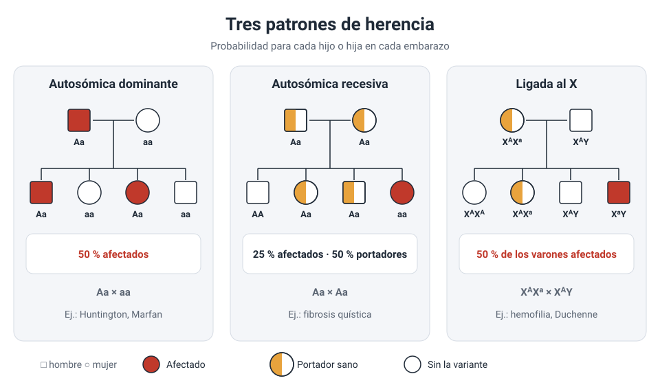

Información divulgativa. No sustituye la valoración de un profesional sanitario ni el consejo genético.
Cuando una enfermedad depende de un solo gen, suele seguir uno de estos patrones. Conocerlos ayuda a entender por qué una enfermedad aparece en varias generaciones seguidas o salta de repente en una familia sin antecedentes.
Autosómica dominante
Basta una copia alterada del gen para tener la enfermedad (o el riesgo aumentado).
- Una persona afectada tiene un 50 % de probabilidad de transmitirla a cada hijo o hija.
- Suele verse en varias generaciones seguidas.
- Afecta por igual a hombres y mujeres.
- Ejemplos: enfermedad de Huntington, hipercolesterolemia familiar, síndrome de Marfan, cáncer hereditario por BRCA1 y BRCA2.
A veces la variante aparece de novo en el hijo, sin antecedentes en la familia. Otras veces una persona portadora no desarrolla la enfermedad (penetrancia incompleta) o la tiene de forma leve (expresividad variable).

Autosómica recesiva
Hacen falta dos copias alteradas, una de cada progenitor.
- Los padres suelen estar sanos: son portadores, con una copia alterada y otra normal.
- Si ambos son portadores, cada embarazo tiene un 25 % de probabilidad de hijo afectado, un 50 % de hijo portador y un 25 % de hijo sin la variante.
- Es más frecuente cuando los padres están emparentados (consanguinidad), porque es más probable que lleven la misma variante.
- Ejemplos: fibrosis quística, anemia falciforme, atrofia muscular espinal, fenilcetonuria.
Todos somos portadores de algunas variantes recesivas sin saberlo.
Ligada al cromosoma X
El gen está en el cromosoma X. Como los hombres tienen un solo X, una copia alterada basta para que tengan la enfermedad; las mujeres, con dos X, suelen ser portadoras con síntomas leves o ninguno.
- Una madre portadora tiene un 50 % de probabilidad de transmitir la variante a cada hijo: los hijos varones que la reciben estarán afectados y las hijas que la reciben serán portadoras.
- Un padre afectado la transmite a todas sus hijas y a ningún hijo, porque a los hijos les pasa el cromosoma Y.
- Ejemplos: hemofilia A y B, distrofia muscular de Duchenne, daltonismo para el rojo y el verde.
Existen también enfermedades dominantes ligadas al X, menos frecuentes, como el síndrome de Rett.
Mitocondrial
El ADN de las mitocondrias se hereda solo de la madre, porque las mitocondrias del espermatozoide no pasan al embrión. Una madre con una variante mitocondrial puede transmitirla a todos sus hijos, pero la gravedad varía mucho según la proporción de mitocondrias afectadas (heteroplasmia). Ejemplo: la neuropatía óptica hereditaria de Leber.
Lo que no encaja en un patrón
La mayoría de las enfermedades comunes, como la diabetes tipo 2, la hipertensión o el infarto, dependen de muchos genes de efecto pequeño y del estilo de vida. Se habla entonces de herencia multifactorial. Tener antecedentes familiares aumenta el riesgo, pero no lo convierte en destino. Lo explicamos en Genes y ambiente.
Fuentes
- MedlinePlus Genetics. What are the different ways a genetic condition can be inherited?
- Nussbaum, R. L., McInnes, R. R. y Willard, H. F. (2016). Thompson & Thompson Genetics in Medicine (8.ª ed.). Elsevier.
- NHGRI. Genetic Disorders. genome.gov.
- Orphanet. Enfermedades raras y medicamentos huérfanos. orpha.net.